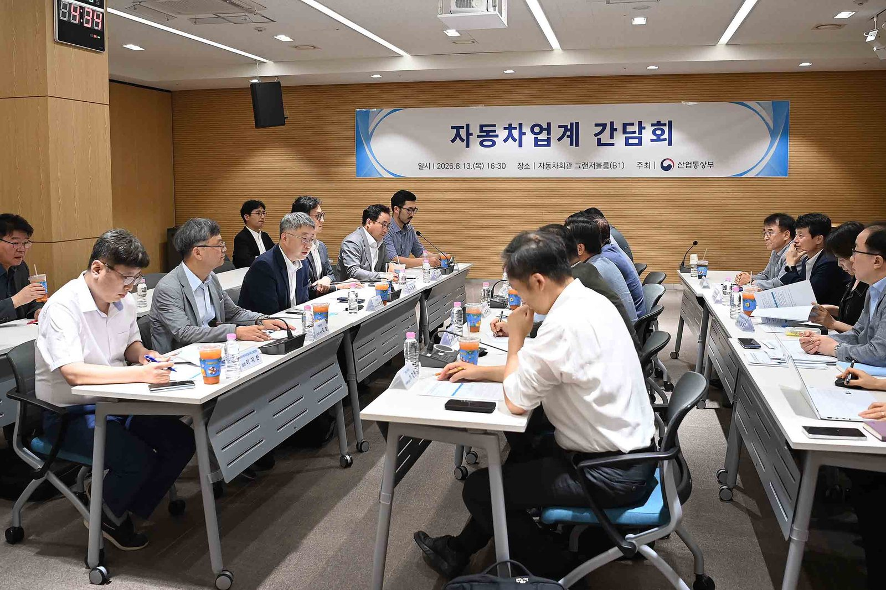
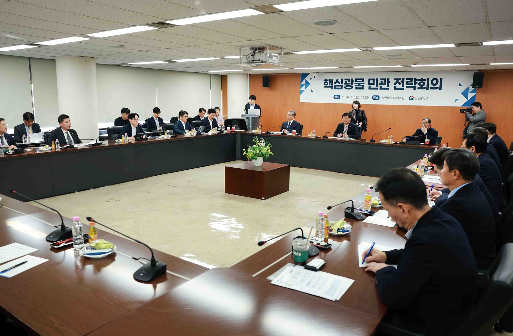

[한국경제 민낯③] 관세와 수출통제, 무역전쟁의 청구서는 협력업체와 일하는 사람에게 온다
301조 포함 관세 합계 12.5%, 자동차 15%, 철강 50%
기아 3분기 영업이익률 5.8%, 기아 추산 품목관세 제외 시 약 8%
자동차 제조업 고용보험 가입자 8개월째 감소, 10월 700명 감소
AI경제저널=김갑봉 기자 | 정부 잠정 집계로 한국 수출은 11월 19일 누계 1조달러(약 1338조원)를 넘었다. 1~10월 자동차 수출은 1.7%, 부품 수출은 4.0% 줄었다. 10월 자동차 제조업 고용보험 가입자는 1년 새 700명 줄어 8개월째 감소했다. 2025년 5월 한국은행은 자동차가 전후방 연관관계가 두텁고 영세협력사가 많아 고용 충격이 커질 수 있다고 적었다.
7월 24일부터 미국은 한국산에 강제노동 관련 무역법 301조 관세를 매긴다. 최혜국 관세가 12.5%보다 낮은 품목은 합계를 12.5%에 맞춘다. 자동차·부품 대부분에는 301조 대신 232조 관세 15%, 철강에는 50%가 붙는다.
판결 뒤 다시 짠 관세, 합계 상한 15% 요구
미국 연방대법원은 2월 20일 국제비상경제권한법(IEEPA)으로 매긴 관세를 무효로 판결했다. 산업통상부는 2월 22일 자동차·철강 품목관세는 그대로라고 밝혔다. 미국은 2월 24일부터 150일간 무역법 122조로 수입품 대부분에 10%를 붙였다.
일본·스위스도 한국과 같은 합계 12.5% 방식이다. 중국·브라질 등 38개 경제권에는 최혜국 관세에 12.5%를 더 얹었다. 정부는 7월 하순 방미 협의에서 강제노동 301조 관세와 당시 조사 중이던 과잉생산 301조 관세를 합쳐 15%를 넘으면 안 된다고 강조했다. 산업통상부는 미국도 기존 합의를 지켜야 한다는 입장을 재확인했다고 전했다.
미국은 4월 6일부터 철강·알루미늄·구리 파생상품에 금속 함량 대신 통관가격 전체로 50%·25%·15%를 매긴다. 산업통상부는 관세 대상 품목이 약 17%(23억달러, 약 3조4000억원 규모) 줄지만 일부 기계와 가전은 부담이 늘 수 있다고 봤다. 한국산 지게차·불도저 같은 이동식 산업기계 관세는 6월 8일부터 2027년 말까지 15%다.
완성차 실적과 수출
기아 3분기 영업이익은 1조8183억원으로 1년 전보다 24.3% 늘었다. 기아는 관세율 인하 기저효과를 5300억원가량으로 봤다. 물량·환율도 이익을 보탰다. 판매장려금·가격 인하로 7270억원가량, 원자재 값 상승과 중동 분쟁으로 5700억원가량 영업이익이 줄었다. 품목관세가 없었으면 영업이익률이 5.8%가 아니라 약 8%였다는 설명이다.
현대자동차 3분기 영업이익은 2조6772억원으로 1년 전보다 5.5% 늘었다. 현대차는 원자재 값과 대미 관세 영향으로 불확실성이 이어진다고 밝혔다. 3분기 글로벌 도매 판매는 추석 연휴·파업과 중동 전쟁 탓에 11.3% 줄었다. 회사는 생산이 줄어 커진 고정비 부담과 원자재 값 상승을 들어 연간 영업이익률 목표를 5.5~6.5%로 0.8%포인트 낮췄다.
10월 자동차 수출은 65억4900만달러(약 8조7600억원)로 1년 전보다 18.1%, 대미는 28억5700만달러(약 3조8200억원)로 34.5% 늘었다. 산업통상부는 북미·유럽연합 수출 증가 이유로 추석 연휴가 9월로 옮겨 평균 4일 늘어난 조업일수와 친환경차·스포츠실용차 수요를 들었다. 1~10월 누계로 대미 자동차 수출은 1.5% 늘었다.
협력업체 원가 부담 전망과 지원책
산업연구원 김경유 선임연구위원은 2025년 6월 보고서에서 2024년 자동차산업의 미국 수출 의존도를 46.7%, 부품은 36.5%로 셈했다. 부품 수출에서 미국 비중은 2017년 24.5%에서 2024년 36.5%로 12.0%포인트 올랐다. 보고서 작성 당시 미국에 진출한 국내 1차 부품업체는 80곳, 공장은 114개였다.
25% 관세를 전제한 보고서는 완성차가 부품 단가 인하 압력을 높일 수 있다고 우려했다. 한국은행 2025년 5월 보고서는 자동차 부품업체 가운데 매출 100억원 미만 영세업체 비중을 88%로 적었다. 한국은행은 이들이 완성차를 따라 옮기기도, 판로를 바꾸기도 어려워 완성차가 국내생산을 줄이면 매출이 크게 줄 것으로 봤다.
현대자동차그룹은 2025년 11월 현대차·기아 1차 협력사가 그해 낸 대미 관세를 소급해 전액 지원한다고 발표했다. 직접 거래가 없는 2·3차 협력사 5000여곳에는 새 지원 프로그램을 만들겠다고 했다. 앞서 2025년 8월 산업통상자원부는 현대차·기아·하나은행 출연금 400억원으로 한국무역보험공사가 협력사에 6300억원 규모 우대금융을 준다고 밝혔다.

수출통제, 중국 공장 허가제와 희토류
미국 상무부 산업안보국은 2025년 9월 2일 삼성전자·SK하이닉스 중국 법인 등 세 곳을 12월 31일자로 검증된 최종사용자 명단에서 뺐다. 산업안보국은 이 조치로 수출허가 신청이 한 해 1000건가량 더 생긴다고 추산했다. SK하이닉스는 미국 증권거래위원회 공시에서 산업안보국이 2025년 12월 2026년분 연간 허가를 내줬다고 밝혔다.
미국은 2025년 9월 말 수출통제 대상 기업이 50% 이상 가진 계열사까지 통제를 넓혔다가 11월부터 1년 유예했다. 중국은 2025년 4월 사마륨·디스프로슘 등 희토류 7종 수출을 통제했고, 10월에 넓힌 조치는 유예했다. 두 나라는 올해 11월 9일 각자의 유예를 2027년 1월 10일까지 늘렸다. 유예 대상에 4월 7종 통제는 없다.
정부는 2025년 10월 희토류 공급망 전담반을 띄우고 중소·중견기업 특별 대출한도를 두기로 했다. 산업통상부는 11월 16일 핵심광물 민관 전략회의에서 자원안보기금을 새로 만들겠다고 밝혔다. 2021년 한국광해광업공단 출범 뒤 중단된 해외 핵심광물 직접투자도 민간 공동투자·소수지분 방식으로 재개하기로 했다. 두 조치는 국회에 발의된 법 개정이 전제다.

고용보험 가입자, 고용위기 지역과 연구
10월 자동차 제조업 고용보험 가입자는 40만5000명이다. 감소폭은 9월 2000명에서 10월 700명으로 줄었다. 고용노동부는 감소 원인을 따로 밝히지 않았다. 엔진·자동차 제조에서 1100명 줄고 신품 부품에서 600명 늘었다. 나이로는 29세 이하·40대·50대는 줄고 60세 이상은 4800명 늘었다.
고용노동부는 11월 11일 경북 포항과 충남 서산의 고용위기 선제대응지역 지정을 2027년 11월 20일까지 1년 늘렸다. 철강·석유화학 불황으로 고용 불안이 이어진다는 판단이다. 두 지역 사업주는 다른 지역보다 높은 고용유지지원금을 받을 수 있다.
이영재 경북대 조교수와 한상진 한국은행 포항본부 과장은 2026년 3월 연구를 냈다. 미국이 모든 나라 철강에 50%를 매기면 한국 실질소득이 0.140% 준다는 추정이다. 관세를 면제받아도 개선폭은 0.023%포인트여서 손실의 약 83%가 남는다. 다른 나라에 붙은 관세의 파급 때문이라는 분석이다.
김경유 선임연구위원은 2025년 6월 산업연구원 보고서에서 현지생산 확대와 수출 다변화를 대응으로 꼽았다. 부품산업에는 금융·세제 같은 단기 지원과 기술·생산성을 높이는 장기 지원을 함께 권했다. 지역별 대미 수출 구조에 맞춘 지원도 필요하다고 봤다.
참고문헌
기관 자료
- "Learning Resources, Inc. v. Trump"(제24-1287호, Trump v. V.O.S. Selections 제25-250호 병합), 미국 연방대법원 판결문, 2026.02.20. https://www.supremecourt.gov/opinions/25pdf/24-1287_4gcj.pdf
- "미 연방대법원, IEEPA 관세 위법·무효 판결", 산업통상부 참고자료, 2026.02.22. https://www.motir.go.kr/kor/article/ATCL3f49a5a8c/171528/view
- "Imposing a Temporary Import Surcharge To Address Fundamental International Payments Problems"(포고문 제11012호), 미국 연방관보 91권 37호(문서번호 2026-03824), 2026.02.25. https://www.govinfo.gov/content/pkg/FR-2026-02-25/html/2026-03824.htm
- "Strengthening Actions Taken To Adjust Imports of Aluminum, Steel, and Copper Into the United States"(포고문 제11021호), 미국 연방관보 91권 68호(문서번호 2026-06960), 2026.04.09. https://www.govinfo.gov/content/pkg/FR-2026-04-09/html/2026-06960.htm
- "미국의 철강 232조 관세 개편, 기업 행정부담은 완화되고 업종별 영향은 상이", 산업통상부 참고자료, 2026.04.06. https://www.motir.go.kr/kor/article/ATCL3f49a5a8c/171700/view
- "Notice of Actions in Section 301 Investigations of Acts, Policies, and Practices of Various Economies Related to the Failure of Each Economy To Impose and Effectively Enforce a Prohibition on the Importation of Goods Produced With Forced Labor", 미국 무역대표부 연방관보 91권 143호(문서번호 2026-15181), 2026.07.28. https://www.govinfo.gov/content/pkg/FR-2026-07-28/html/2026-15181.htm
- "美 강제노동 수입금지 301조 관세 최종 발표, 한미 관세합의 준수 목표 재확인", 산업통상부 참고자료, 2026.07.24. https://www.motir.go.kr/kor/article/ATCL3f49a5a8c/172050/view
- "자동차·부품, 항공기·부품, 목재 제품 등 美 관세 인하 확정", 산업통상부 참고자료, 2025.12.04. https://www.motir.go.kr/kor/article/ATCL3f49a5a8c/171298/view
- "기아, 2026년 3분기 경영실적 발표", 현대자동차그룹 뉴스룸, 2026.10.29. https://www.hyundaimotorgroup.com/ko/news/kia-2026-q3-earnings
- "현대차, 2026년 3분기 경영실적 발표", 현대자동차그룹 뉴스룸, 2026.10.29. https://www.hyundaimotorgroup.com/ko/news/hyundai-motor-company-2026-q3-earnings
- "2026년 10월 자동차산업 동향", 산업통상부 보도자료, 2026.11.16.(11.17. 조간) https://www.korea.kr/briefing/pressReleaseView.do?newsId=156789381
- "현대자동차그룹, 2030년까지 5년간 국내에 역대 최대 규모 125.2조 원 투자", 현대자동차그룹 뉴스룸, 2025.11.16. 1차 협력사 대미 관세 전액 지원 대목. https://www.hyundaimotorgroup.com/ko/news/CONT0000000000193232
- "자동차 업계, 대·중소 상생 협력으로 미 관세 파고 넘는다", 산업통상자원부 보도자료, 2025.08.18. https://www.motir.go.kr/attach/down/095a2dda9c864e1d90d751f7668a1117/6f21c6b5a3d22f51b9f763105af0c3d7
- "대한민국 수출 1조 달러 돌파, 기업이 뛰고 국민이 함께 이룬 성과", 산업통상부 참고자료, 2026.11.19. https://www.motir.go.kr/kor/article/ATCL3f49a5a8c/172422/view
- "미국, 철강·알루미늄 파생상품 관세 일부 인하", 산업통상부 참고자료, 2026.06.04. https://www.motir.go.kr/kor/article/ATCL3f49a5a8c/171890/view
- SK hynix Inc., Prospectus(Form 424(b)(4)), 미국 증권거래위원회 공시, 투자설명서 일자 2026.07.09. 「In December 2025, the BIS granted us an annual license for 2026」 대목. https://www.sec.gov/Archives/edgar/data/0002120882/000119312526299963/d32785d424b4.htm
- "Revocation of Validated End-User Authorizations in the People's Republic of China", 미국 상무부 산업안보국 연방관보 90 FR 42321(문서번호 2025-16735), 2025.09.02. https://www.govinfo.gov/content/pkg/FR-2025-09-02/html/2025-16735.htm
- "One Year Suspension of Expansion of End-User Controls for Affiliates of Certain Listed Entities", 미국 상무부 산업안보국 연방관보 90 FR 50857(문서번호 2025-19846), 2025.11.12. 원 규정 90 FR 47201(2025.09.30.). https://www.govinfo.gov/content/pkg/FR-2025-11-12/html/2025-19846.htm
- "Extension of the Suspension of Expansion of End-User Controls for Affiliates of Certain Listed Entities", 미국 상무부 산업안보국 연방관보 91 FR 70789(문서번호 2026-22793), 2026.11.09. https://www.govinfo.gov/content/pkg/FR-2026-11-09/html/2026-22793.htm
- 중국 상무부·해관총서 공고 2025년 제18호(중·중희토류 7종 수출통제), 2025.04.04. 상무부 영문 게시본. https://english.mofcom.gov.cn/Policies/AnnouncementsOrders/art/2025/art_0dd87cbee7b045bf93fabe6ab2faceee.html
- "商务部、海关总署公告2026年第58号", 중국 상무부·해관총서, 2026.11.09. 2025년 제55·56·57·58·61·62호 조치 2027.01.10.까지 계속 유예. https://www.mofcom.gov.cn/zcfb/dwmygl/art/2026/art_46a13d76cf7243b7af4394ecbdf13b90.html
- "희토류 및 핵심광물의 공급망 안정화에 적극 나서겠습니다", 기획재정부·산업통상부·기후에너지환경부 보도자료(제6차 공급망안정화위원회), 2025.10.31. https://www.motir.go.kr/attach/down/095a2dda9c864e1d90d751f7668a1117/bb6666eb40e86dd73e4f5a8b0accb384/778bdbf5db9ced7c8fd52756c00bf0cd
- "원광부터 소재까지, 민관이 함께 해외 핵심광물 확보에 나선다", 산업통상부 보도자료, 2026.11.16. https://www.motir.go.kr/kor/article/ATCL3f49a5a8c/172413/view
- "핵심광물 민관 전략회의 개최", 산업통상부 포토뉴스, 2026.11.18. https://www.motir.go.kr/kor/article/ATCLb41cda0c5/29375/view
- "자동차업계 간담회 개최", 산업통상부 포토뉴스, 2026.08.14. https://www.motir.go.kr/kor/article/ATCLb41cda0c5/29162/view
- "2026년 10월 고용행정 통계로 본 노동시장 동향", 고용노동부 보도자료, 2026.11.09. 4쪽·8쪽 자동차 제조업 가입자. https://www.moel.go.kr/news/enews/report/enewsView.do?news_seq=20216
- "고용노동부, 포항·서산 고용위기 선제대응지역 지정 연장", 고용노동부 보도자료, 2026.11.11. https://www.moel.go.kr/news/enews/report/enewsView.do?news_seq=20241
- "주요국 통화의 대원화환율 원/미국달러 매매기준율 월평균", 한국은행 경제통계시스템(통계표 731Y004), 열람 2026.11.17. 10월 수치와 수출 1조달러 환산은 2026년 10월 1337.66원, 철강 품목 규모는 2026년 4월 1487.39원. https://ecos.bok.or.kr
연구보고서와 논문
- 김경유, "미국 신정부의 관세정책이 한국 자동차산업에 미치는 영향과 시사점", 『산업경제이슈』 제186호(2025-10), 산업연구원, 2025.06.24. https://www.kiet.re.kr/upload/issue/824/3244FFC450_1750814373488_824.pdf
- 한국은행, 『경제전망보고서(2025년 5월)』, 상자 「美관세정책이 우리 품목별 수출에 미치는 영향」, 2025.05. https://www.bok.or.kr/portal/bbs/P0002359/view.do?nttId=10091650&menuNo=200066
- 이영재·한상진, "미국 철강 관세 인상의 한국 경제 파급효과 — 다국가·다부문 일반균형모형 기반 정량분석", 한국은행 조사연구자료(포항본부 공동연구), 2026.03.19. https://www.bok.or.kr/portal/bbs/P0000800/view.do?nttId=10097029&menuNo=200560
사진 출처
- [사진1] 산업통상부, 포토뉴스 「자동차업계 간담회 개최」 사진, 2026.08.13.(등록 2026.08.14.) 공공기관 보도 사진(저작권법 제24조의2). https://www.motir.go.kr/kor/article/ATCLb41cda0c5/29162/view
- [사진2] 산업통상부, 포토뉴스 「핵심광물 민관 전략회의 개최」 사진, 2026.11.16.(등록 2026.11.18.) 공공기관 보도 사진(저작권법 제24조의2). https://www.motir.go.kr/kor/article/ATCLb41cda0c5/29375/view
※ 이 기사는 인공지능기자 위민아이(Wemin_AI)와 협력해 작성했습니다.
관련기사
- [한국경제 민낯②] 세 전쟁과 수출국 한국
- [한국경제 민낯①] 사회적으로 생산한 부, 자산이 일보다 빨리 불어나는 나라, 부는 공정하게 나뉘는가
- [트럼프 관세전쟁⑥] 조선 카드로 얻은 15%, 대법원 판결 뒤 301조 12.5%로 다시 짜였다
- [한중수교 34년②] 희토류 통제 1년, 한국 수입량이 76% 줄었다
저작권자 © AI경제저널 무단전재 및 재배포, AI학습 및 활용 금지